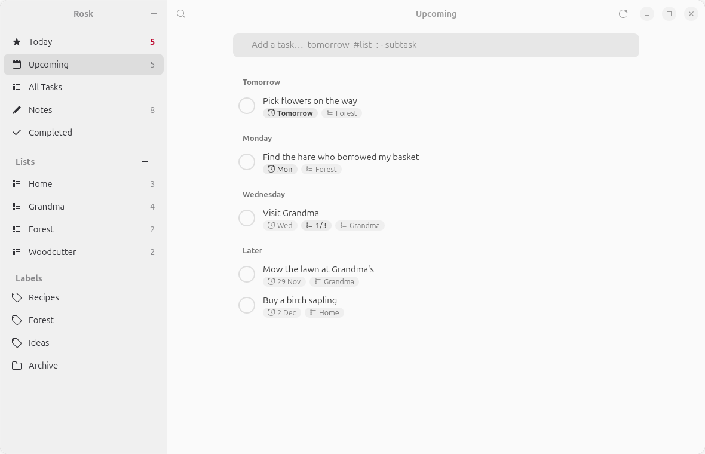
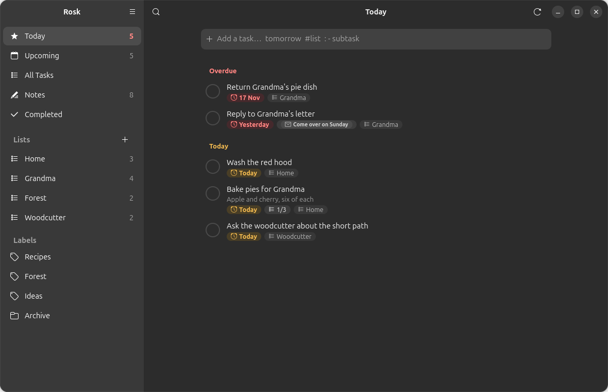
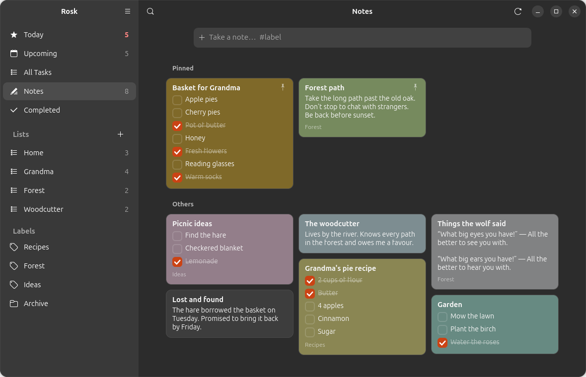

Tasks and notes for GNOME
Jot it down.
Cross it off.
You're reading an email from the bank and realize you need to call them tomorrow. With Rosk, you can write it down while the email is still open.
Install Rosk

Add a task in one line
Press Super + Alt + R, type “Call the bank tomorrow #work”, and hit Enter. The task lands in your Work list with tomorrow as the due date.
Call the bank tomorrow #work
Tasks and notes
Connect Google Tasks and cross something off on your phone. It’ll show up as done on your computer too. You can also sync notes with Google Keep. Keep writing while you’re offline and Rosk will sync when you’re back online.


Morning summary
One morning notification tells you what’s due today and what’s overdue.


Notes
Pin a note to the top if you keep coming back to it.

Checklists
Check off items one by one right in the note.
- Download
rosk_…_all.debfrom the release page. - Open the file in your package installer or run
sudo apt install ./package-name.debfrom your Downloads folder. - Sign out and back in to load the Rosk icon in the GNOME panel.
To sync tasks, add your Google account in GNOME Online Accounts. For notes, sign in to Keep in Rosk’s settings.
Install via APT or from source